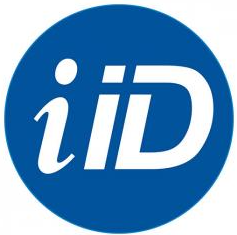
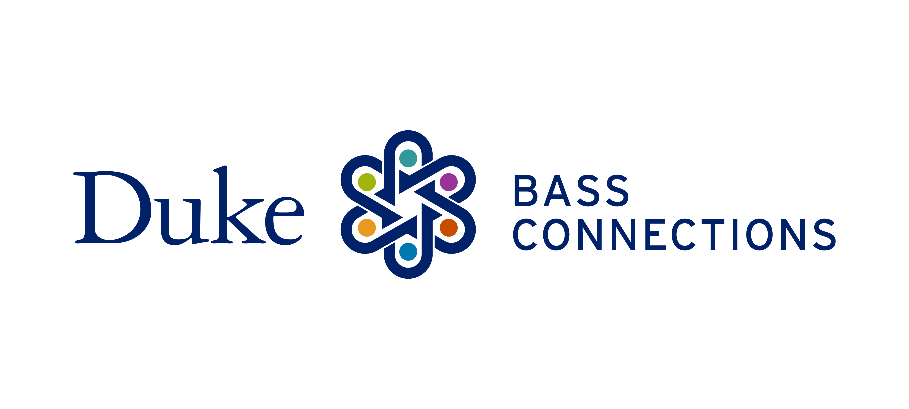
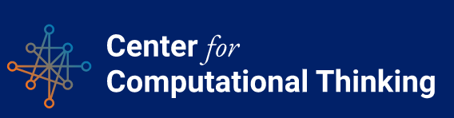
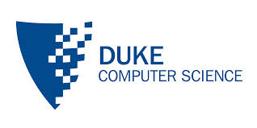
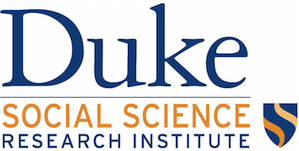

Sponsors
Thank you 2025 Sponsors!
Click here for more information about how you can support DataFest at Duke. You can also contact us if you have any questions.
Pareto Sponsors ($2,500 - $4,999)

Rhodes Information Initiative is an interdisciplinary program designed to increase “big data” computational research and expand opportunities for student engagement in this rapidly growing field.
UNC Department of Statistics and Operations Research focuses on developing the quantitative and computational skills practitioners need to to solve today’s complex problems in statistics, probabilistic analysis, modeling, optimization, and evaluating systems.
Lognormal Sponsors ($1,000 - $2,499)
2nd Order Solutions (2OS) is a boutique credit advisory firm that provides credit risk consultancy services for clients ranging from top 10 banks to financial technology startups throughout the world.

Duke Bass Connections brings together students and faculty in interdisicplinary teams to research complex questions and societal challenges. Students gain experience doing academic research, collaborating with peers and faculty, and applying their knowledge and skills to solve problems and work with community partners.
 Duke Center for Computational Thinking works with partner programs and organizations across Duke to deliver learning opportunities that align with our vision of preparing all Duke students – regardless of field of study – for the digital twenty-first century.
The Department of Computer Science at Duke is an internationally recognized leader in research and education. Undergraduates take classes with renowned faculty, engage in cutting-edge research, and build a strong foundation for future study or work in a wide variety of fields. One of the many hallmarks of Duke Computer Science’s success has been fruitful collaborations among different groups within the department, with research groups in other departments at Duke, with other institutes, and with industry. –>

Duke Social Science Research Institute (SSRI) brings together researchers with interests in problems that cross the various social and behavioral sciences, including problems that connect with the humanities and natural sciences. SSRI promotes multidisciplinary collaboration among such scholars as they work on important social issues that are challenging to address fully from within any given discipline.
Acknowledgements

The Department of Statistical Science at Duke is nationally ranked in the top 5 research departments and as a top 10 graduate program. Recognized as the world’s leading center for Bayesian statistics and its interdisciplinary applications, the Department is a Duke campus hub for statistical and computational research.
The Center for Data and Visualization Sciences of the Duke Libraries has a mission to “partner with faculty, researchers, and students through consultation, instruction, co-curricular programming, and research assistance at various stages of the research data lifecycle.” They will be offering some of the ASA DataFestTM workshops. Click here for more information.
The Office of Information Technology manages Duke’s central technology infrastructure and provides services and applications to support the educational and research missions of the institution, as well as the university’s business functions. They are providing computing resources and support for the event.
The North Carolina Shared Research & Education collaborative infrastructure (NCShare) is bringing a high-speed research network to North Carolina’s minority and higher education institutions.

The American Statistical Association is the world’s largest community of statisticians, the “Big Tent for Statistics.” It is the second-oldest, continuously operating professional association in the country. Since it was founded in Boston in 1839, the ASA has supported excellence in the development, application, and dissemination of statistical science through meetings, publications, membership services, education, accreditation, and advocacy.